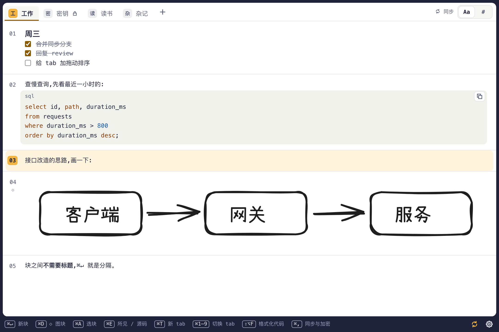

## 分块书写
同一页一直往下写,⌘↵ 新建块,⌘A 选中当前块。文本块按 Markdown 显示,⌘E 在所见与源码之间切换;代码块带高亮和复制按钮,⇧⌥F 格式化。
## 图块
⌘D 在页面里原地画图,用的是 Excalidraw。每张图存成 .excalidraw 场景和 .svg 预览。
## tab
每个 tab 一个文件夹,可以单独决定同步与否、加密与否。
## git 同步
用 GitHub 登录,选一个你自己的仓库(只授权这一个),自动提交、合并、推送。有冲突不弹窗,冲突标记留在块里。
## 端侧加密
加密 tab 的内容和名字在仓库里都是密文(age 格式)。不用板儿,也能用 age 命令行工具解开。
## 数据即文件
文本块就是普通的 .md 文件,明文 tab 在 git 网页上直接能读。
## 从源码安装
需要 Node 22+、Rust stable、Xcode 命令行工具。
bash
git clone https://github.com/SandyKidYao/baner.git && cd baner npm install # 1. 安装依赖(同时启用提交前钩子) npm run tauri dev # 2. 启动开发版
安装正式版:scripts/install-app.sh(release 构建、ad-hoc 签名、不公证,装到 /Applications/Baner.app)。